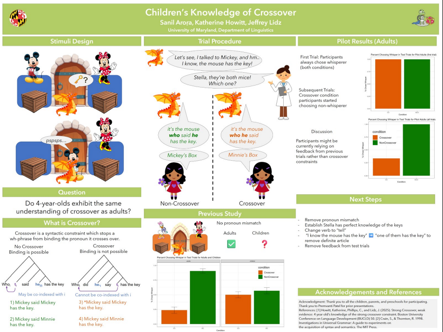

From January to December 2025, I was working at Dr. Jeffery Lidz's Child Language Acquisition Lab in the department of Linguistics at UMD. I was helping then PhD candidate Katherine Howitt investigate at what age native English speaker acquire crossover constraints.
Crossover constraints are a type of grammatical rule which isn't explicitly taught to children as they are learning to speak a language. Yet, knowledge of this rule is consistently demonstrated by speakers of a language. By finding out how such rules are acquired, we can understand more about the underlying cognitive systems which make language possible.
My role in running the study was designing the elements of the experiment that were shown to the participants. Since the participants were 4 year-olds, the experiment had to be engaging. Yet, it had to not be so distracting as to create noise in the data. I also had to make a research poster (which you can see below) to present our findings to the department. Since I made this poster, many changes have been made to the study. More up to date information can be found in Katherine's abstract presented in BUCLD 2025.
